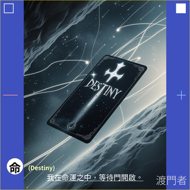

LOC1 · Rune Draw
月符抽牌

請靜心等待至少五秒，請不要重複點擊。
抽牌會在等待後自動完成。若此模式需要首次喚醒遠端服務，當天第一次使用可能需要更久，最長約 30 秒，請讓頁面繼續等待。
切換抽牌模式
單卡
一個問題，一個語意起點。
每日
一天一張，觀看今日提示。
雙卡
以「因 → 果」觀看兩者關係。
三卡
以「源 → 轉 → 合」形成語意路徑。
五卡
以既有五卡結構展開情境。
11 張 · OW3gs
Reserved · 尚未開放。